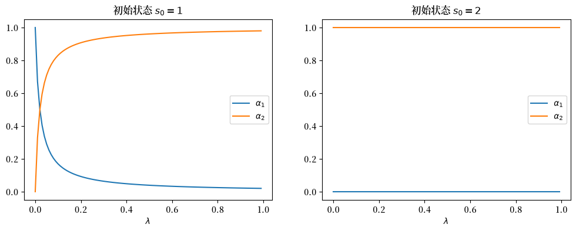
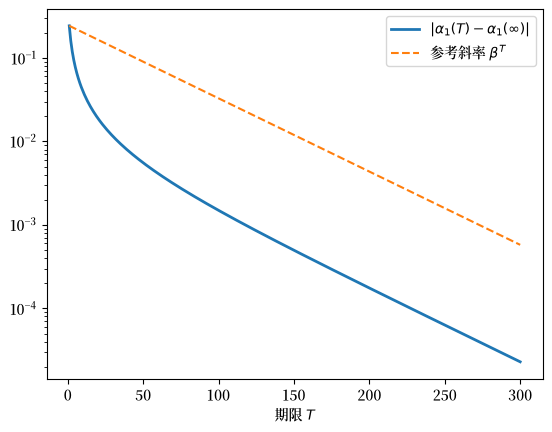

130. 带有阿罗证券的竞争均衡#
130.1. 概述#
本讲座介绍了Python代码，用于实验具有以下特征的无限期纯交换经济的竞争均衡：
异质个体，
单一消费品的禀赋，是共同马尔可夫状态的个人特定函数，
一期阿罗状态或有证券的完全市场，
在宏观经济学和金融学中常用的贴现期望效用偏好，
个体之间具有相同的偏好，具有共同的贴现因子和固定相对风险厌恶度(CRRA)的单期效用函数，以及
个体之间具有共同的信念。
个体在禀赋上的差异使他们想要在时间和马尔可夫状态之间重新配置消费品。
相同的CRRA偏好意味着均衡消费份额是恒定的，因此我们可以在计算财富的均衡分布之前根据总体禀赋计算均衡价格。
我们施加限制条件，使我们能够将竞争均衡的价格和数量贝尔曼化。
我们使用贝尔曼方程来描述
资产价格，
每个人的延续财富水平，以及
每个人的逐状态自然债务限额。
在介绍模型的过程中，我们将遇到这些重要概念：
在此类模型中广泛使用的解算子，
有限期限经济中借贷限制的缺失，
无限期经济中所需的逐状态借贷限制，
迭代期望法则的对应概念，称为迭代值法则，以及
在竞争均衡中存在的状态变量退化现象，这为各种解算子的出现铺平了道路。
本讲座实现了 [Ljungqvist and Sargent, 2018] 第9.3.3节中所提出模型的 Python 版本。
这些内容的历史比看起来要悠久得多。
本讲座研究的序贯交易安排，以及拥有一整套历史条件索取权的时间\(0\)安排，还有证明这两种安排支持相同配置的证明，都出现在肯尼思·阿罗于1952年5月在巴黎宣读、并于1953年以法文发表的一篇论文中[Arrow, 1964]。
阿罗的序贯安排还应得到第二个名称。
因为今天交易证券的家庭必须基于对明天商品交易价格的预测来行动，而且这两种安排的等价性只有在市场确认该预测时才成立，所以阿罗的序贯均衡正是Muth [1961]在将近十年后赋予这一术语时所称的理性预期均衡。
我们在下面关于理性预期均衡的章节中展开这一解读，这一解读是我们从Kihlstrom [2019]那里学到的。
读者如果了解资产定价：有限状态模型中的有限状态马尔可夫资产定价公式和有限马尔可夫链中的马尔可夫链概念，将会对理解本讲有所帮助。
让我们先导入一些库。
import numpy as np
import matplotlib.pyplot as plt
import matplotlib as mpl
from scipy.optimize import root
FONTPATH = "fonts/SourceHanSerifSC-SemiBold.otf"
mpl.font_manager.fontManager.addfont(FONTPATH)
plt.rcParams['font.family'] = ['Source Han Serif SC']
np.set_printoptions(suppress=True)
130.2. 设定#
130.2.1. 偏好和禀赋#
在每个时期 \(t\geq 0\)，一个随机事件 \(s_t \in \mathbf{S}\) 会实现。
让我们用 \(s^t = [s_0, s_{1}, \ldots, s_{t-1}, s_t]\) 来表示直到时间 \(t\) 的事件历史。
观察到特定事件序列 \(s^t\) 的无条件概率由概率测度 \(\pi_t(s^t)\) 给出。
对于 \(t > \tau\)，我们将在已知 \(s^\tau\) 的条件下观察到 \(s^t\) 的概率写作 \(\pi_t(s^t\vert s^\tau)\)。
我们假设交易发生在观察到 \(s_0\) 之后，这通过对初始给定值 \(s_0\) 设定 \(\pi_0(s_0)=1\) 来体现。
在本讲中，我们将遵循大多数宏观经济学和计量经济学的做法，假设 \(\pi_t(s^t)\) 是由马尔可夫过程产生的。
有 \(K\) 个消费者，记为 \(k=1, \ldots , K\)。
消费者 \(k\) 拥有一种商品的随机禀赋 \(y_t^k(s^t)\)，其取决于历史 \(s^t\)。
历史 \(s^t\) 是公开可观察的。
消费者 \(k\) 购买一个依赖于历史的消费计划 \(c^k = \{c_t^k(s^t)\}_{t=0}^\infty\)。
所有消费者都通过以下方式对消费计划进行排序
其中 \(0 < \beta < 1\)。
右边等于 \( E_0 \sum_{t=0}^\infty \beta^t u(c_t^k) \)，其中 \(E_0\) 是数学期望算子，以 \(s_0\) 为条件。
这里 \(u(c)\) 是一个关于单一商品消费 \(c\geq 0\) 的递增、二次连续可微、严格凹的函数。
该效用函数满足 Inada 条件
这个条件意味着只要其禀赋的现值为正，每个个体就会在每个日期-历史对 \((t, s^t)\) 都选择严格为正的消费。
这些内部解使我们能够将分析限制在等式成立的欧拉方程上，并且保证在像我们这样具有阿罗证券序贯交易的经济中，自然债务限制不会受到约束。
我们采用宏观经济学中常用的假设，即消费者对所有的 \(t\) 和 \(s^t\) 共享相同的概率 \(\pi_t(s^t)\)。
一个可行配置满足
对所有的 \(t\) 和所有的 \(s^t\) 成立。
直到我们讨论计算均衡那一节之前，\(u\) 只需要满足上面列出的性质。
从那之后，我们将专门研究CRRA效用。
130.3. 马尔可夫资产价格#
在建立均衡之前，我们先总结在马尔可夫环境下计算资产价格的公式。
这些公式在资产定价：有限状态模型中有更详细的展开。
该设置假定以下基础架构：
马尔可夫状态 \(s \in \mathbf{S} = \{\bar{s}_1, \ldots, \bar{s}_n\}\)，由具有转移概率的\(n\)状态马尔可夫链支配
一组 \(h = 1, \ldots, H\) 个资产，资产\(h\)在状态\(s\)下支付\(d^h(s)\)，因此\(d^h\)是一个\(n \times 1\)向量；以及
一个 \(n \times n\) 的一期阿罗证券定价核 \(Q\)，其中 \(Q_{ij}\) 是在时间 \(t\) 状态 \(s_t = \bar s_i\) 时，如果 \(s_{t+1} = \bar s_j\)，在时间 \(t+1\) 交付一单位消费的价格。
在状态 \(\bar s_i\) 中，支付每个状态下一单位消费的一期无风险债券的价格是 \(\sum_j Q_{ij}\)。
因此该债券的总回报率是
130.3.1. 外生定价核#
现在我们将把定价核 \(Q\) 视为外生的，即由模型外部决定。
两个例子是：
\(Q = \beta P\)，其中 \(\beta \in (0, 1)\)，以及
\(Q_{ij} = m_{ij} P_{ij}\)，其中当马尔可夫状态从\(\bar s_i\)变动到\(\bar s_j\)时，\(m_{ij} > 0\)是随机贴现因子的值。
第二个例子是对\(P\)逐元素相乘，而不是矩阵乘积。
现在我们来描述两种类型资产的价格。
第一种是含红利股票，它使持有者有权获得时间\(t\)的红利，并有权在时间\(t+1\)出售该资产。
其价格满足\(p^h(\bar s_i) = d^h(\bar s_i) + \sum_j Q_{ij} p^h(\bar s_j)\)，因此向量\(p^h\)满足\(p^h = d^h + Q p^h\)。
只要\(Q\)的每个特征值的模都小于1，这就意味着
第二种是在时间\(t\)末购买的除权股票，它使持有者有权获得时间\(t+1\)的红利，并有权在时间\(t+1\)出售该股票。
其价格为
备注
矩阵几何级数\((I - Q)^{-1} = I + Q + Q^2 + \cdots\)是预解算子的一个例子。
当\(Q\)的谱半径小于1时，该级数收敛。
下面我们将描述一个带有一期阿罗证券交易的均衡模型，其中定价核是内生的。
在构建该模型的过程中，我们会反复遇到让我们想起这些资产定价公式的公式。
130.3.2. 多步转移概率和定价核#
\(j\)步前向转移矩阵 \(P^j\) 的 \((i,j)\) 分量是
为了使下面的符号简洁，我们将这些\(j\)步转移概率写作\(P_j(s_{t+j} \mid s_t)\)，因此\(P_j\)用矩阵\(P^j\)表示。
同样地，在时间\(t\)状态\(s_t\)下，在时间\(t+j\)状态\(s_{t+j}\)交付一单位消费的价格是\(Q_j(s_{t+j} \mid s_t)\)，用矩阵\(Q^j\)表示。
我们将使用这些对象来说明资产定价理论中的一个有用性质。
130.3.3. 迭代期望法则和迭代值法则#
迭代值法则具有与迭代期望法则相平行的数学结构。
在本讲座的马尔可夫设定中，我们可以很容易地描述其结构。
回顾我们有限状态马尔可夫链的\(j\)步前向转移概率满足的以下递归关系：
我们可以使用这个递归来验证迭代期望法则，该法则应用于随机变量\(d(s_{t+j})\)在\(s_t\)条件下的条件期望：
\(j\)步前向阿罗证券的定价核满足以下递归关系：
在马尔可夫状态\(s_t\)下，时间\(t+j\)的支付\(d(s_{t+j})\)在时间\(t\)的价值是
迭代值法则指出
我们通过以下一系列等式来验证它，这些等式与我们用来验证迭代期望法则的等式相对应：
130.4. 递归表述#
根据 [Ljungqvist and Sargent, 2018] 第9.3.3节的描述，我们现在建立一个具有一期阿罗证券完全市场的纯交换经济的竞争均衡。
当禀赋\(y^k(s)\)都是共同马尔可夫状态\(s\)的函数时，定价核采用\(Q(s' \mid s)\)的形式，即在\(t\)时刻马尔可夫状态为\(s\)时，\(t+1\)时刻状态\(s'\)下一单位消费的价格。
这使我们能够对消费者的优化问题给出递归表述。
消费者\(k\)在\(t\)时刻的状态是其金融财富\(a^k_t\)和马尔可夫状态\(s_t\)。
令\(v^k(a,s)\)为消费者\(k\)从状态\((a,s)\)开始的问题的最优值。
因此，\(v^k(a,s)\)是当前拥有金融财富\(a\)的消费者\(k\)在马尔可夫状态\(s\)下能获得的最大期望贴现效用。
最优值函数满足贝尔曼方程
其中最大化受预算约束
以及约束条件
第二组约束是一组逐状态的债务限制。
求解贝尔曼方程的值函数和决策规则依赖于定价核\(Q(\cdot \vert \cdot)\)，因为它出现在预算约束中。
贝尔曼方程右侧问题的一阶条件，连同Benveniste–Scheinkman公式，意味着
其中理解为 \(c_t^k = c^k(s_t)\) 且 \(c_{t+1}^k = c^k(s_{t+1})\)。
130.4.1. 递归竞争均衡#
递归竞争均衡是指一个初始财富分布 \(\vec a_0\)，一组借贷限额 \(\{\bar A^k(s)\}_{k=1}^K\)，一个定价核 \(Q(s' \mid s)\)，一组价值函数 \(\{v^k(a,s)\}_{k=1}^K\)，以及决策规则 \(\{c^k(s), \hat a^k(s)\}_{k=1}^K\)，使得
各状态下的借贷限制满足递归式
对于所有 \(k\)，给定 \(a^k_0\)、\(\bar A^k(s)\) 和定价核，价值函数和决策规则求解消费者的问题；
对于 \(\{s_t\}_{t=0}^\infty\) 的所有实现，消费和资产组合 \(\{\{c^k_t, \{\hat a^k_{t+1}(s')\}_{s'}\}_k\}_t\) 满足 \(\sum_k c^k_t = \sum_k y^k(s_t)\)，且对所有 \(t\) 和 \(s'\) 有 \(\sum_k \hat a_{t+1}^k(s') = 0\)；以及
初始金融财富向量 \(\vec a_0\) 满足 \(\sum_{k=1}^K a_0^k = 0\)。
第三个条件断言商品市场出清，并且在所有马尔可夫状态下净总索赔为零。
第四个条件断言经济是封闭的，并且从净总索赔为零的情况开始。
130.5. 理性预期均衡#
我们刚刚定义的均衡要求每个消费者在知道这些索取权交易的定价核 \(Q(s' \mid s)\) 的情况下，选择今天的索取权组合 \(\hat a(s')\)。
但投资组合对消费者的价值取决于明天商品的价格。
因此这种均衡内嵌了一个预测，并且只有当市场确认该预测时，才构成均衡。
这正是Radner [1972]后来正式提出的计划、价格和价格预期的均衡。
130.5.1. 单一商品所掩盖的东西#
在我们的经济中，序贯交易者必须预测的唯一价格是一期定价核\(Q(s' \mid s)\)。
在给定日期和马尔可夫状态内，不存在需要预测的相对价格，因为默认一种商品是计价单位。
在阿罗的\(C>1\)种商品的经济中，选择投资组合的家庭必须预测在每个状态\(s\)下将盛行的整个现货价格向量\(\bar p_s = (\bar p_{s1}, \ldots, \bar p_{sC})\)，因为只有这些价格才能告诉它状态\(s\)下交付的一美元的价值。
当且仅当这些预测在每个状态下都是正确的，两种交易安排的等价性才成立。
这正是阿罗的序贯均衡是理性预期均衡的确切含义，也是我们单一商品表述中空洞地满足的要求。
练习 130.4 要求你在一个有若干种商品的两期经济中验证这种等价性，在那里这一要求是有实质内容的。
130.5.2. 以计价单位计价的证券#
阿罗的等价性只取决于那些预测的正确性，这本身就是他将证券以计价单位计价的结果。
因为一单位状态\(s\)证券在状态\(s\)发生时支付一美元，所以投资组合能实现的状态或有财富分布的集合在任何预测做出之前就已确定。
Hart [1975]提出了当证券改为支付商品时会发生什么的问题。
如果证券\(f\)在状态\(s\)下交付一捆商品\(a_f(s)\)，其以美元计的支付就是\(\bar p_s \cdot a_f(s)\)，因此预测\(\bar p\)决定了资产市场的张成空间，张成空间决定了消费者的预算集，而这些预算集又决定了被预测的价格。
完备性变成了一个均衡结果，而不是一个假设。
接下来可能出现两个在我们单一商品经济中不可能出现的问题。
可能存在多个均衡，它们的预测都是正确的，但在哪些市场实际上是开放的这一点上有所不同，并且这些均衡之间存在严格的帕累托排序。
也可能根本不存在均衡，即使效用函数严格凹、禀赋严格为正，且没有交易成本。
练习 130.5 详细讲解了哈特的这两个例子。
130.5.3. 关于自然的信念与对价格的预期#
阿罗在这里做出了一个值得保留的区分。
他的消费者基于主观概率行事，这些概率在不同人之间可以不同，他的定理没有一条要求人们在各状态的可能性上达成一致。
他的序贯安排所要求的是，消费者在另一件事上达成一致，而且是正确的：各状态下将盛行的价格。
关于外生自然的信念可以是异质的；但对内生价格的预期不可以。
本讲座施加了更强的共同信念假设，这使我们能够在每个消费者的欧拉方程中写出单一的概率\(\pi(s' \mid s)\)。
130.5.4. 节约市场#
阿罗观察到，序贯安排可以节约市场。
在我们的无限期经济中，时间\(0\)的交易需要为每个日期和每段历史建立一个索取权市场，而序贯交易在每个日期只需要\(n\)个一期市场。
在练习 130.4的两期、\(S\)状态、\(C\)商品经济中，时间\(0\)交易需要\(SC\)个或有索取权市场，而序贯安排只需要\(S\)个证券市场，再加上无论哪个状态实现后的\(C\)个现货市场。
然而，无论如何计算市场数量，都无法揭示序贯安排所需要的额外假设，即对现货价格的预测是正确的。
备注
Kihlstrom [2019]指出，当阿罗在1952年提出这一内容时，使这种等价性变得显而易见的动态规划工具尚不存在，因为贝尔曼当时正在创建它。
将家庭一次性问题分解为投资组合选择，再加上一系列期内问题的步骤，正是我们在上文用来将均衡贝尔曼化的论证。
130.6. 状态变量退化#
[Ljungqvist and Sargent, 2018]和Cass-Koopmans竞争均衡描述了一种不同的时序协议，其中存在一份针对所有日期消费的完整的历史条件索取权菜单，所有交易都在时间\(0\)一次性发生。
为了使递归竞争均衡的配置和定价核与该时间\(0\)安排的配置和定价核一致，我们必须对\(k=1,\ldots,K\)施加\(a_0^k=0\)。
该初始条件确保在时间\(0\)，每个消费者的消费现值等于其禀赋流的现值，这正是时间\(0\)安排的单一预算约束。
从所有\(k\)的\(a_0^k=0\)开始运行系统，带来了一个显著的含义，我们称之为状态变量退化。
尽管价值函数\(v^k(a,s)\)中出现了两个状态变量\(a\)和\(s\)，但在从初始马尔可夫状态\(s_0\)处所有\(k\)的\(a_0^k=0\)开始的递归竞争均衡中，会出现以下两个结果：
金融财富\(a_t^k\)是马尔可夫状态\(s_t\)的一个精确函数，我们将在下面计算它，以及
每当马尔可夫状态\(s_t\)返回到\(s_0\)时，所有\(k\)的\(a_t^k=0\)。
第一个发现表明，在竞争均衡中，外生马尔可夫状态是我们追踪个体所需的全部信息，因为金融财富是多余的。
第二个发现表明，每当马尔可夫状态返回到其初始值时，每个家庭都会回到其生命开始时的零金融财富状态。
如果\(s_0\)是马尔可夫链的一个常返状态，这种情况会无限次发生；但如果\(s_0\)是一个瞬态状态，这种情况则可能根本不会发生；参见有限马尔可夫链。
这个结果严重依赖于阿罗证券市场的完备性。
例如，在艾亚加里模型的不完备市场设置中，这一结果并不成立，在那里家庭的财富取决于其冲击的整个历史。
130.7. 计算竞争均衡#
现在我们准备进行一些有趣的计算。
我们发现从一般均衡理论的分析性输入和输出角度来思考很有意思。
130.7.1. 输入和输出#
输入是
马尔可夫状态 \(s \in \mathbf{S} = \{\bar{s}_1, \ldots, \bar{s}_n\}\)，由具有转移矩阵\(P\)的\(n\)状态马尔可夫链支配；
\(K\)个个体禀赋向量\(y^k\)，每个维度为\(n \times 1\)，分量为\(y^k(\bar s_i)\)；
\(n \times 1\)的总体禀赋向量\(y(s) \equiv \sum_{k=1}^K y^k(s)\)；以及
由共同效用泛函\(E_0 \sum_{t=0}^\infty \beta^t u(c_t^k)\)给出的偏好，贴现因子\(\beta \in (0,1)\)，以及CRRA单期效用函数
可行性要求
输出是
一个\(n \times n\)的一期阿罗证券定价核\(Q\)；
总体配置，在纯交换经济中为\(c(s) = y(s)\)；
一个\(K \times 1\)的财富分布\(\alpha\)，满足\(\alpha_k \geq 0\)且\(\sum_{k=1}^K \alpha_k = 1\)；以及
\(K\)个个体消费向量\(c^k\)，每个维度为\(n \times 1\)。
130.7.2. 定价核#
对于任意个体 \(k \in \{1, \ldots, K\}\)，在均衡配置下，一期阿罗证券定价核满足
这来自个体\(k\)的一阶必要条件。
因为所有个体面临相同的定价核，任意两个个体\(k\)和\(m\)的欧拉方程意味着
因此，比率\(c^k(s)/c^m(s)\)在任何通过正转移概率相连的两个状态下都相同，因而在从\(s_0\)可达的每个状态下都相同。
因此消费份额是恒定的，可行性条件给出
对于满足\(\alpha_k \geq 0\)且\(\sum_{k=1}^K \alpha_k = 1\)的财富分布\(\alpha\)。
备注
相同的CRRA偏好也满足戈尔曼聚合的条件，因为恩格尔曲线是具有共同斜率的线性曲线，所以存在一个代表性消费者。
然而，消费份额的恒定性直接来自上面的欧拉方程。
这意味着我们可以通过以下公式计算定价核：
这正是资产定价：有限状态模型中研究的卢卡斯树经济的定价核，在该经济中，代表性消费者消费总体禀赋。
定价核\(Q\)不依赖于向量\(\alpha\)。
关键发现：我们可以在计算财富分布之前计算竞争均衡价格。
财富分布\(\alpha\)并不是任意的。
正如我们下面所展示的，它由初始条件\(a_0^k = 0\)所固定。
公式(130.1)有一个有用的矩阵形式。
令\(D = \mathrm{diag}\bigl(u'(y_1), \ldots, u'(y_n)\bigr)\)。
那么\(Q = \beta D^{-1} P D\)，所以\(Q\)与\(\beta P\)相似。
它的特征值是\(P\)的特征值乘以\(\beta\)，又因为\(P\)是随机矩阵，所以\(Q\)的谱半径等于\(\beta < 1\)。
这保证了下面用到的预解算子\((I - Q)^{-1}\)是存在的。
130.7.3. 自然债务限制#
在计算出均衡定价核\(Q\)后，我们可以计算几个在表述或求解个体家庭最优化问题时所需的价值。
对每个个体\(k\)，令\(\bar A^k\)为分量为\(\bar A^k(\bar s_i)\)的\(n \times 1\)向量。
均衡定义中的递归关系意味着
在具有一期阿罗证券序贯交易的无限期经济的竞争均衡中，\(\bar A^k(s)\)是一个逐状态限制，限制个体\(k\)在时间\(t\)可以发行的、在时间\(t+1\)状态\(s\)下支付的一期阿罗证券数量。
这些通常被称为自然债务限制。
它们等于个体\(k\)即使永远不消费任何商品，在状态\(s\)下也能偿还的最大金额。
备注
如果效用在零消费处满足Inada条件，或者消费仅仅被要求非负，那么具有一期阿罗证券序贯交易的有限期经济就不需要自然债务限制。
详见下文关于有限期经济的部分。
130.7.4. 延续财富和最优投资组合#
延续财富在将具有一期阿罗证券完整集合序贯交易的竞争均衡贝尔曼化的过程中发挥着重要作用。
对每个个体\(k\)，令\(\psi^k\)为分量为\(\psi^k(\bar s_i)\)的\(n \times 1\)向量，表示当马尔可夫状态为\(\bar s_i\)时消费者\(k\)持有的金融财富。
延续财富满足
要理解为什么，请注意，在消费\(c^k = \alpha_k y\)且投资组合\(\hat a^k(s') = \psi^k(s')\)的情况下，预算约束在每个状态下都以等式成立，当且仅当\(\psi^k = \alpha_k y - y^k + Q \psi^k\)。
对\(k\)求和表明\(\sum_{k=1}^K \psi^k = 0_{n \times 1}\)，因此阿罗证券市场出清。
该模型的一个巧妙特点是，\(k\)类型个体的最优投资组合等于我们刚刚计算的延续财富。
因此，个体\(k\)在下一期对将要支付的阿罗证券的购买仅取决于下一期的马尔可夫状态，且等于
130.7.5. 均衡财富分布#
当初始状态为特定状态\(s_0 \in \{\bar{s}_1, \ldots, \bar{s}_n\}\)时，我们必须有
这样每个个体一开始都无债务且不持有金融资产。
这意味着均衡财富分布满足
其中\(V \equiv \left[I - Q\right]^{-1}\)，\(V_z\)是对应于初始状态\(s_0\)的\(V\)的行。
由于\(\sum_{k=1}^K V_z y^k = V_z y\)，所以\(\sum_{k=1}^K \alpha_k = 1\)。
将(130.5)与(130.2)相比较，可以得到一个颇具启发性的解释，
每个消费者在总体消费中的份额，等于其在初始状态下总体禀赋价值中所占的份额。
因为\(\alpha\)通过\(V_z\)依赖于\(s_0\)，同一个经济从不同的马尔可夫状态出发，会产生不同的财富分布。
130.7.6. 价值函数#
我们还可以在带有一期状态或有阿罗证券完全交易的竞争均衡中计算最优价值函数。
将消费者\(k\)的最优价值函数记为\(n \times 1\)向量\(J^k\)。
对于现在研究的无限期经济，
其中\(u(\alpha_k y)\)是分量为\(u(\alpha_k y_i)\)的\(n \times 1\)向量。
130.7.7. 算法总结#
以下是计算竞争均衡的算法逻辑流程：
130.8. 有限期限#
我们现在描述一个运行 \(T+1\) 期、时期 \(t \in \mathbf{T} = \{0, 1, \ldots, T\}\) 的经济的有限期限版本。
我们需要上述对象的时间依赖对应物，但有一个重要的例外：我们不需要借贷限制。
在一个有限期限经济中，如果单期效用函数 \(u(c)\) 满足消费趋近于零时边际效用趋于无穷的Inada条件，则不需要借贷限制。
在所有 \(t \in \mathbf{T}\) 上消费的非负性自动限制了借贷，因为没有人能在\(T\)期末负债。
对每个个体\(k\)和日期\(t\)，令\(\psi_t^k\)为延续财富的\(n \times 1\)向量。
在终止日期，没有未来需要融资，所以\(\psi_T^k = \alpha_k y - y^k\)。
从预算约束\(\psi_t^k = \alpha_k y - y^k + Q \psi_{t+1}^k\)向后递推，得到
和之前一样，对所有\(t \in \mathbf{T}\)，\(\sum_{k=1}^K \psi_t^k = 0_{n \times 1}\)。
当初始状态为特定状态\(s_0\)时，我们必须有
这意味着均衡财富分布满足
其中现在
且\(V_z\)是对应于初始状态\(s_0\)的\(V\)的行。
备注
在有限期限经济中，延续财富既依赖于马尔可夫状态，也依赖于日历时间。
初始条件设定\(\psi_0^k(s_0) = 0\)，但当马尔可夫状态在稍后的日期\(t\)返回到\(s_0\)时，剩余的期数更少，(130.6)中的几何和被更早地截断，一般而言\(\psi_t^k(s_0) \neq 0\)。
那种财富仅仅是马尔可夫状态函数的强形式的状态变量退化，是无限期限所特有的。
练习 130.3 探讨了这一点。
要在有限期限马尔可夫经济中计算带有阿罗证券的竞争均衡，需要：
根据公式(130.1)，由总体禀赋计算\(Q\)；
使用\(\alpha\)，为每个消费者\(k\)分配在每个状态下总体禀赋的份额\(\alpha_k\)；
根据公式(130.6)计算延续财富；以及
将个体\(k\)的投资组合逐状态地设置为其延续财富。
消费者\(k\)在时间\(t\)的价值函数是
130.9. Python代码#
现在我们创建一个Python类，用于计算包含单期阿罗证券连续交易的竞争均衡的对象。
该类既能处理无限期限经济，也能处理以期限\(T\)为索引的有限期限经济。
讲座中的每一个几何级数都具有\(I + M + \cdots\)的形式，其中价格和财富对应\(M=Q\)，而价值对应\(M=\beta P\)，因此一个单独的辅助方法就可以计算所有这些级数。
在有限期限的情况下，该辅助方法通过递推式\(S_t = I + M S_{t+1}\)向后计算，从\(S_T = I\)开始。
当\(M=Q\)时，这个递推式正是迭代值法则在起作用：从\(t\)到\(T\)的支付在时间\(t\)的价值等于\(t\)时刻的支付，加上\(t+1\)时刻剩余支付价值在时间\(t\)的价值。
当\(M=\beta P\)时，这是迭代期望法则应用于贴现效用。
该类还有一个方法，通过应用这些级数，对红利向量为\(d\)的资产进行定价，从而得到含红利价格\(p = d + Q d + Q^2 d + \cdots\)和除权价格\(p - d\)。
在有限期限情形中，依赖时间的数组按\(t=0\)到\(t=T\)排序，因此ψ[t]是\(\psi_t\)，J[t]是\(J_t\)。
在无限期限情形中，它们只有一个前导元素。
class RecurCompetitive:
"""
具有单期阿罗证券完全市场的竞争均衡。
参数
----------
s : 长度为 n 的数组
马尔可夫状态
P : n x n 数组
马尔可夫转移矩阵
ys : n x K 数组
禀赋，第 k 列为个体 k 的禀赋
γ : float
相对风险厌恶系数
β : float
贴现因子
T : int 或 None
时间范围，None 表示无限期限
"""
def __init__(self, s, P, ys, γ=0.5, β=0.98, T=None):
self.s, self.P, self.ys = s, P, ys
self.γ, self.β, self.T = γ, β, T
self.n, self.K = ys.shape
self.y = ys.sum(axis=1) # 总体禀赋
self.Q = self.pricing_kernel()
self.PRF = self.Q.sum(axis=1) # 无风险债券的价格
self.R = 1 / self.PRF # 无风险总回报率
# V[t] = I + Q + ... + Q^(T-t)，若 T 为 None 则为 [(I - Q)^(-1)]
self.V = self.geometric_sums(self.Q)
# 禀赋的时间0价值，即自然债务限制
self.A = self.asset_price(ys)
def u(self, c):
"CRRA效用"
return c ** (1 - self.γ) / (1 - self.γ)
def u_prime(self, c):
"边际效用"
return c ** (-self.γ)
def pricing_kernel(self):
"来自公式(eq:Qformula)的定价核Q"
mu = self.u_prime(self.y)
return self.β * self.P * mu[None, :] / mu[:, None]
def geometric_sums(self, M):
"""
若T为None，返回[(I - M)^(-1)]；否则返回序列
S[0], ..., S[T]，其中S[t] = I + M + ... + M^(T-t)。
"""
n, T = self.n, self.T
if T is None:
return np.linalg.inv(np.eye(n) - M)[None, :, :]
S = np.empty((T+1, n, n))
S[T] = np.eye(n)
for t in range(T-1, -1, -1):
S[t] = np.eye(n) + M @ S[t+1] # 迭代值法则
return S
def asset_price(self, d, ex_dividend=False):
"""
红利向量为d（n 或 n x K）的资产的时间0价格：
含红利 p = d + Q d + Q^2 d + ...，或除权 p - d。
"""
p = self.V[0] @ d
return p - d if ex_dividend else p
def wealth_distribution(self, s0_idx):
"初始状态索引为s0_idx时的财富分布α"
self.s0_idx = s0_idx
V_z = self.V[0, s0_idx, :]
self.α = V_z @ self.ys / (V_z @ self.y)
return self.α
def continuation_wealths(self):
"延续财富ψ，其中ψ[t, i, k] = ψ_t^k(s_i)"
excess = np.outer(self.y, self.α) - self.ys # α_k y - y^k
self.ψ = self.V @ excess
return self.ψ
def value_functions(self):
"价值函数J，其中J[t, i, k] = J_t^k(s_i)"
flow = self.u(np.outer(self.y, self.α)) # u(α_k y)
self.J = self.geometric_sums(self.β * self.P) @ flow
return self.J
130.10. 示例#
我们将使用代码在几个示例经济中构建均衡对象。
我们的前几个示例是无限期限经济。
我们的最后一个示例是有限期限经济。
除非另有说明，示例使用默认参数值 \(\gamma = 0.5\) 和 \(\beta = 0.98\)。
130.10.1. 示例 1：固定的总体禀赋#
两个个体的禀赋完全负相关，所以总体禀赋是固定的。
s = np.array([0, 1])
P = np.array([[.5, .5],
[.5, .5]])
ys = np.empty((2, 2))
ys[:, 0] = 1 - s # 个体1
ys[:, 1] = s # 个体2
ex1 = RecurCompetitive(s, P, ys)
print("总体禀赋 y =", ex1.y)
print("定价核 Q = \n", ex1.Q)
print("无风险利率 R =", ex1.R)
print("自然债务限制 A = \n", ex1.A)
总体禀赋 y = [1. 1.]
定价核 Q =
[[0.49 0.49]
[0.49 0.49]]
无风险利率 R = [1.02040816 1.02040816]
自然债务限制 A =
[[25.5 24.5]
[24.5 25.5]]
因为总体禀赋是固定的，边际效用也是固定的，所以\(Q = \beta P\)，并且两个状态下的无风险利率都是\(\beta^{-1}\)。
# 初始状态为状态1
print(f'α = {ex1.wealth_distribution(s0_idx=0)}')
print(f'ψ = \n{ex1.continuation_wealths()}')
print(f'J = \n{ex1.value_functions()}')
print(f'初始状态s0下自然债务限制的份额: {ex1.A[0] / ex1.A[0].sum()}')
α = [0.51 0.49]
ψ =
[[[-0. 0.]
[ 1. -1.]]]
J =
[[[71.41428429 70. ]
[71.41428429 70. ]]]
初始状态s0下自然债务限制的份额: [0.51 0.49]
当经济从状态1开始时，个体1获得的总体消费略多于一半。
它的禀赋在初始期就到达，而更早获得的消费贴现更少。
正如最后一行所确认的，每个个体的消费份额等于其在初始状态下自然债务限制中所占的份额。
在状态2中，个体1没有禀赋，个体1持有一单位金融财富，用以支付其消费，而个体2恰好欠下这个数额。
# 初始状态为状态2
print(f'α = {ex1.wealth_distribution(s0_idx=1)}')
print(f'ψ = \n{ex1.continuation_wealths()}')
print(f'J = \n{ex1.value_functions()}')
α = [0.49 0.51]
ψ =
[[[-1. 1.]
[ 0. -0.]]]
J =
[[[70. 71.41428429]
[70. 71.41428429]]]
从状态2开始仅仅是交换了两个个体的角色。
130.10.2. 示例 2：波动的总体禀赋#
现在个体1的禀赋固定，而个体2的禀赋波动，因此总体禀赋也波动。
s = np.array([1, 2])
P = np.array([[.5, .5],
[.5, .5]])
ys = np.empty((2, 2))
ys[:, 0] = 1.5 # 个体1
ys[:, 1] = s # 个体2
ex2 = RecurCompetitive(s, P, ys)
print("总体禀赋 y =", ex2.y)
print("定价核 Q = \n", ex2.Q)
print("无风险利率 R =", ex2.R)
print("自然债务限制 A = \n", ex2.A)
总体禀赋 y = [2.5 3.5]
定价核 Q =
[[0.49 0.41412558]
[0.57977582 0.49 ]]
无风险利率 R = [1.10604104 0.93477529]
自然债务限制 A =
[[69.30941886 66.91255848]
[81.73318641 79.98879094]]
示例1和示例2中的定价核不同，因为示例1中总体禀赋是固定的，而示例2中总体禀赋在各状态间不同。
我们可以直接用公式(130.1)检验\(Q\)的两个非对角元素。
print(ex2.β * ex2.u_prime(3.5) / ex2.u_prime(2.5) * ex2.P[0, 1], ex2.Q[0, 1])
print(ex2.β * ex2.u_prime(2.5) / ex2.u_prime(3.5) * ex2.P[1, 0], ex2.Q[1, 0])
0.4141255848169731 0.4141255848169731
0.5797758187437624 0.5797758187437624
对高禀赋状态下消费的索取权是便宜的，因为那里的边际效用较低。
无风险利率在低禀赋状态（预计消费将上升）下较高，而在高禀赋状态（预计消费将下降）下较低。
现在让我们使用马尔可夫资产价格一节中的公式\(p^h = (I - Q)^{-1} d^h\)和\(p^h = (I - Q)^{-1} Q d^h\)，对一些有风险的资产进行定价。
我们对一棵以总体禀赋为红利的卢卡斯树，以及对每个个体禀赋流的索取权进行定价。
p_tree = ex2.asset_price(ex2.y)
p_tree_ex = ex2.asset_price(ex2.y, ex_dividend=True)
print("含红利树价格 p =", p_tree)
print("除权树价格 p =", p_tree_ex)
print("价格-红利比率（除权） =", p_tree_ex / ex2.y)
print("贝尔曼残差 |p - d - Qp| =",
np.abs(p_tree - ex2.y - ex2.Q @ p_tree).max())
print("对禀赋的索取权 = \n", ex2.asset_price(ex2.ys))
含红利树价格 p = [136.22197734 161.72197734]
除权树价格 p = [133.72197734 158.22197734]
价格-红利比率（除权） = [53.48879094 45.20627924]
贝尔曼残差 |p - d - Qp| = 2.842170943040401e-14
对禀赋的索取权 =
[[69.30941886 66.91255848]
[81.73318641 79.98879094]]
含红利价格在机器精度范围内满足单步贝尔曼方程\(p = d + Qp\)。
除权价格-红利比率在低禀赋状态下更高，因为当前红利相对于预期未来红利较低。
最后一个数组再现了上面计算的自然债务限制：个体\(k\)在状态\(s\)下的自然债务限制，就是对个体\(k\)自身禀赋流索取权的含红利价格。
这就是为什么个体能偿还的债务永远不会超过\(\bar A^k(s)\)：因为它可以出售其禀赋索取权，然后永远不再消费。
# 初始状态为状态1
print(f'α = {ex2.wealth_distribution(s0_idx=0)}')
print(f'ψ = \n{ex2.continuation_wealths()}')
print(f'J = \n{ex2.value_functions()}')
α = [0.50879763 0.49120237]
ψ =
[[[ 0. 0. ]
[ 0.55057195 -0.55057195]]]
J =
[[[122.907875 120.76397493]
[123.32114686 121.17003803]]]
# 初始状态为状态2
print(f'α = {ex2.wealth_distribution(s0_idx=1)}')
print(f'ψ = \n{ex2.continuation_wealths()}')
print(f'J = \n{ex2.value_functions()}')
α = [0.50539319 0.49460681]
ψ =
[[[-0.46375886 0.46375886]
[ 0. -0. ]]]
J =
[[[122.49598809 121.18174895]
[122.907875 121.58921679]]]
130.10.3. 示例 3：吸收态#
在这个例子中，状态2是吸收态，所以状态1是瞬态。
s = np.array([1, 2])
λ = 0.9
P = np.array([[1-λ, λ],
[0, 1]])
ys = np.empty((2, 2))
ys[:, 0] = [1, 0] # 个体1
ys[:, 1] = [0, 1] # 个体2
ex3 = RecurCompetitive(s, P, ys)
print("定价核 Q = \n", ex3.Q)
print("自然债务限制 A = \n", ex3.A)
定价核 Q =
[[0.098 0.882]
[0. 0.98 ]]
自然债务限制 A =
[[ 1.10864745 48.89135255]
[ 0. 50. ]]
个体1在状态2下的自然债务限制是\(0\)。
一旦经济进入吸收态，个体1将永远不会再收到任何禀赋单位，因此它不能可信地承诺偿还任何债务。
# 初始状态为状态1
print(f'α = {ex3.wealth_distribution(s0_idx=0)}')
print(f'ψ = \n{ex3.continuation_wealths()}')
print(f'J = \n{ex3.value_functions()}')
α = [0.02217295 0.97782705]
ψ =
[[[ 0. -0. ]
[ 1.10864745 -1.10864745]]]
J =
[[[14.89058394 98.88513796]
[14.89058394 98.88513796]]]
从状态1开始，个体1只能获得总体消费中很小的一部分，因为它的禀赋仅在经济保持在瞬态状态时才会到达。
因为状态1是瞬态，经济最终会永远离开这一状态，个体的财富不会周期性地回到零。
# 初始状态为状态2
print(f'α = {ex3.wealth_distribution(s0_idx=1)}')
print(f'ψ = \n{ex3.continuation_wealths()}')
print(f'J = \n{ex3.value_functions()}')
α = [0. 1.]
ψ =
[[[-1.10864745 1.10864745]
[ 0. 0. ]]]
J =
[[[ 0. 100.]
[ 0. 100.]]]
从吸收态开始，个体1不拥有任何有价值的东西，所以\(\alpha_1 = 0\)，个体1将永远不消费。
这个极端情形与上面关于Inada条件的讨论是一致的，该条件只保证禀赋具有正价值的个体才能获得内部消费解。
对于示例3中马尔可夫链的设定，让我们看看均衡财富分布如何随转移概率\(\lambda\)变化。
λ_seq = np.linspace(0, 0.99, 100)
# 准备容器
αs0_seq = np.empty((len(λ_seq), 2))
αs1_seq = np.empty((len(λ_seq), 2))
for i, λ in enumerate(λ_seq):
P_λ = np.array([[1-λ, λ],
[0, 1]])
ex3_λ = RecurCompetitive(s, P_λ, ys)
# 初始状态 s0 = 1
αs0_seq[i, :] = ex3_λ.wealth_distribution(s0_idx=0)
# 初始状态 s0 = 2
αs1_seq[i, :] = ex3_λ.wealth_distribution(s0_idx=1)
fig, axs = plt.subplots(1, 2, figsize=(12, 4))
for i, αs_seq in enumerate([αs0_seq, αs1_seq]):
for j in range(2):
axs[i].plot(λ_seq, αs_seq[:, j], label=f'$\\alpha_{j+1}$')
axs[i].set_xlabel(r'$\lambda$')
axs[i].set_title(f'初始状态 $s_0 = {s[i]}$')
axs[i].legend()
plt.show()
findfont: Failed to find font weight normal, now using 600.
findfont: Failed to find font weight normal, now using 600.
findfont: Failed to find font weight normal, now using 600.
findfont: Failed to find font weight normal, now using 600.

当经济从状态1开始时，永久离开该状态的概率\(\lambda\)越高，个体1禀赋的预期持续时间就越短，其财富份额也就越低。
当经济从吸收态2开始时，\(\lambda\)就无关紧要了，个体2拥有一切。
130.10.4. 示例 4：繁荣、适中和衰退#
我们最后一个无限期限示例有三个马尔可夫状态，我们将其解释为繁荣、适中状态和衰退。
s = np.array([1, 2, 3])
λ = .9
μ = .9
δ = .05
# 繁荣、适中和衰退状态
P = np.array([[1-λ, λ, 0],
[(1-μ)/2, μ, (1-μ)/2],
[(1-δ)/2, (1-δ)/2, δ]])
ys = np.empty((3, 2))
ys[:, 0] = [.25, .75, .2] # 个体1
ys[:, 1] = [1.25, .25, .2] # 个体2
ex4 = RecurCompetitive(s, P, ys)
print("P的行之和为", P.sum(axis=1))
print("总体禀赋 y =", ex4.y)
print("定价核 Q = \n", ex4.Q)
print("无风险利率 R =", ex4.R)
print("自然债务限制 A = \n", ex4.A)
P的行之和为 [1. 1. 1.]
总体禀赋 y = [1.5 1. 0.4]
定价核 Q =
[[0.098 1.08022498 0. ]
[0.04000833 0.882 0.0774758 ]
[0.24038317 0.29440805 0.049 ]]
无风险利率 R = [0.84873434 1.00051613 1.71294115]
自然债务限制 A =
[[41.66943407 19.83317897]
[34.56301265 15.40376106]
[21.44296495 9.99216994]]
适中状态具有高度持续性，而经济会很快脱离衰退。
无风险总回报率在繁荣时期低于1（因为预期总体消费将下降），而在衰退时期远高于1（因为预期消费将复苏）。
for i in range(3):
print(f"初始状态为状态 {i+1}")
print(f'α = {ex4.wealth_distribution(s0_idx=i)}')
print(f'ψ = \n{ex4.continuation_wealths()}')
print(f'J = \n{ex4.value_functions()}\n')
初始状态为状态 1
α = [0.67752299 0.32247701]
ψ =
[[[ 0. -0. ]
[-0.7093749 0.7093749 ]
[-0.14493847 0.14493847]]]
J =
[[[82.66847975 57.03314431]
[82.25708619 56.7493231 ]
[81.82336679 56.45009924]]]
初始状态为状态 2
α = [0.69171992 0.30828008]
ψ =
[[[ 0.87314842 -0.87314842]
[ 0. 0. ]
[ 0.30134401 -0.30134401]]]
J =
[[[83.53011415 55.76358242]
[83.11443273 55.48607909]
[82.67619277 55.19351598]]]
初始状态为状态 3
α = [0.6821337 0.3178663]
ψ =
[[[ 0.28357106 -0.28357106]
[-0.47899231 0.47899231]
[ 0. 0. ]]]
J =
[[[82.9492928 56.62395182]
[82.53650179 56.34216692]
[82.1013091 56.04508989]]]
个体1的禀赋集中在持续性较强的适中状态中，无论经济从哪个状态开始，它都能获得约三分之二的总体消费。
130.10.5. 有限期限示例#
我们现在重新审视示例1中定义的经济，但将时间期限设为\(T=10\)。
s = np.array([0, 1])
P = np.array([[.5, .5],
[.5, .5]])
ys = np.empty((2, 2))
ys[:, 0] = 1 - s # 个体1
ys[:, 1] = s # 个体2
ex1_finite = RecurCompetitive(s, P, ys, T=10)
# I + Q + Q^2 + ... + Q^T
ex1_finite.V[0]
array([[5.48171623, 4.48171623],
[4.48171623, 5.48171623]])
在有限期限情形中，ψ和J以从\(t=0\)到\(t=T\)排序的序列形式返回。
# 初始状态为状态1
print(f'α = {ex1_finite.wealth_distribution(s0_idx=0)}')
print(f'ψ = \n{ex1_finite.continuation_wealths()}\n')
print(f'J = \n{ex1_finite.value_functions()}')
α = [0.55018351 0.44981649]
ψ =
[[[ 0. 0. ]
[ 1. -1. ]]
[[-0.04100358 0.04100358]
[ 0.95899642 -0.95899642]]
[[-0.08284397 0.08284397]
[ 0.91715603 -0.91715603]]
[[-0.12553824 0.12553824]
[ 0.87446176 -0.87446176]]
[[-0.16910383 0.16910383]
[ 0.83089617 -0.83089617]]
[[-0.21355851 0.21355851]
[ 0.78644149 -0.78644149]]
[[-0.25892042 0.25892042]
[ 0.74107958 -0.74107958]]
[[-0.30520809 0.30520809]
[ 0.69479191 -0.69479191]]
[[-0.35244041 0.35244041]
[ 0.64755959 -0.64755959]]
[[-0.40063665 0.40063665]
[ 0.59936335 -0.59936335]]
[[-0.44981649 0.44981649]
[ 0.55018351 -0.55018351]]]
J =
[[[14.78062373 13.3646215 ]
[14.78062373 13.3646215 ]]
[[13.56850674 12.26862684]
[13.56850674 12.26862684]]
[[12.33165268 11.15026494]
[12.33165268 11.15026494]]
[[11.06955669 10.00907933]
[11.06955669 10.00907933]]
[[ 9.78170364 8.84460421]
[ 9.78170364 8.84460421]]
[[ 8.46756788 7.6563643 ]
[ 8.46756788 7.6563643 ]]
[[ 7.12661302 6.44387459]
[ 7.12661302 6.44387459]]
[[ 5.75829174 5.20664019]
[ 5.75829174 5.20664019]]
[[ 4.36204553 3.94415611]
[ 4.36204553 3.94415611]]
[[ 2.9373045 2.65590706]
[ 2.9373045 2.65590706]]
[[ 1.48348712 1.3413672 ]
[ 1.48348712 1.3413672 ]]]
# 初始状态为状态2
print(f'α = {ex1_finite.wealth_distribution(s0_idx=1)}')
print(f'ψ = \n{ex1_finite.continuation_wealths()}\n')
print(f'J = \n{ex1_finite.value_functions()}')
α = [0.44981649 0.55018351]
ψ =
[[[-1. 1. ]
[ 0. 0. ]]
[[-0.95899642 0.95899642]
[ 0.04100358 -0.04100358]]
[[-0.91715603 0.91715603]
[ 0.08284397 -0.08284397]]
[[-0.87446176 0.87446176]
[ 0.12553824 -0.12553824]]
[[-0.83089617 0.83089617]
[ 0.16910383 -0.16910383]]
[[-0.78644149 0.78644149]
[ 0.21355851 -0.21355851]]
[[-0.74107958 0.74107958]
[ 0.25892042 -0.25892042]]
[[-0.69479191 0.69479191]
[ 0.30520809 -0.30520809]]
[[-0.64755959 0.64755959]
[ 0.35244041 -0.35244041]]
[[-0.59936335 0.59936335]
[ 0.40063665 -0.40063665]]
[[-0.55018351 0.55018351]
[ 0.44981649 -0.44981649]]]
J =
[[[13.3646215 14.78062373]
[13.3646215 14.78062373]]
[[12.26862684 13.56850674]
[12.26862684 13.56850674]]
[[11.15026494 12.33165268]
[11.15026494 12.33165268]]
[[10.00907933 11.06955669]
[10.00907933 11.06955669]]
[[ 8.84460421 9.78170364]
[ 8.84460421 9.78170364]]
[[ 7.6563643 8.46756788]
[ 7.6563643 8.46756788]]
[[ 6.44387459 7.12661302]
[ 6.44387459 7.12661302]]
[[ 5.20664019 5.75829174]
[ 5.20664019 5.75829174]]
[[ 3.94415611 4.36204553]
[ 3.94415611 4.36204553]]
[[ 2.65590706 2.9373045 ]
[ 2.65590706 2.9373045 ]]
[[ 1.3413672 1.48348712]
[ 1.3413672 1.48348712]]]
财富分布比示例1中更不均等，因为在较短的时间范围内，初始期收到的禀赋在个体禀赋总价值中占更大的比例。
让我们来看看为什么这个经济不需要借贷限制。
在日期\(t\)，个体\(k\)能从自身禀赋中偿还的最大数额是其剩余禀赋流的价值，\([I + Q + \cdots + Q^{T-t}]\, y^k\)。
与无限期限经济不同，这些界限不需要被施加。
在日期\(T\)没有证券交易，因此个体无法展期其债务，而\(T\)期非负消费限制了其能欠下的债务不超过\(y^k(s_T)\)。
向后推导，每个更早日期的非负消费都意味着该日期的债务上界。
个体的债务上界与其债务之间的差距，\(\psi_t^k + [I + Q + \cdots + Q^{T-t}]\, y^k\)，等于\([I + Q + \cdots + Q^{T-t}]\, \alpha_k y\)，即该个体剩余消费的价值。
该价值为正，因为消费为正，所以隐含的界限永远不会被触及。
以下代码计算了每个日期和状态下的界限，并证实了这一点。
ex1_finite.wealth_distribution(s0_idx=0)
ψ_finite = ex1_finite.continuation_wealths()
bounds = ex1_finite.V @ ex1_finite.ys # bounds[t] = (I + ... + Q^(T-t)) y^k
print("t = T时隐含的债务上界（行：状态，列：个体）：\n", bounds[-1])
print("在所有t、状态和个体中，ψ_t + bound的最小松弛量：",
(ψ_finite + bounds).min().round(4))
t = T时隐含的债务上界（行：状态，列：个体）：
[[1. 0.]
[0. 1.]]
在所有t、状态和个体中，ψ_t + bound的最小松弛量： 0.4498
在\(t=T\)时，债务上界就是当前禀赋，此时松弛量最小，因为只剩一期消费需要估值。
在无限期限经济中，不存在必须清偿债务的最后日期，因此如果没有明确的限制，个体就可能永远展期越来越大的债务，所以必须施加自然债务限制(130.2)。
我们可以检验，当\(T \rightarrow \infty\)时，有限期限的结果会收敛到无限期限经济的结果。
下面两个经济都从状态2开始，我们比较时间0的各个对象。
ex1_large = RecurCompetitive(s, P, ys, T=10000)
ex1.wealth_distribution(s0_idx=1)
ex1_large.wealth_distribution(s0_idx=1)
print("V:", np.abs(ex1.V[0] - ex1_large.V[0]).max())
print("ψ:", np.abs(ex1.continuation_wealths()[0]
- ex1_large.continuation_wealths()[0]).max())
print("J:", np.abs(ex1.value_functions()[0]
- ex1_large.value_functions()[0]).max())
V: 1.3500311979441904e-13
ψ: 5.329070518200751e-15
J: 3.694822225952521e-13
最大绝对差异可以忽略不计。
130.11. 结束语#
我们一开始就承诺，要对一个具有异质禀赋、一期阿罗证券完全市场、相同CRRA偏好和共同信念的无限期交换经济的竞争均衡给出可计算的说明。
以下是本讲座如何兑现这一承诺的。
130.11.1. 先定价后财富分布#
因为所有个体面临相同的定价核，他们的欧拉方程迫使消费份额恒定，使得\(c^k(s) = \alpha_k y(s)\)。
因此，定价核(130.1)只依赖于总体禀赋，并且与代表性个体卢卡斯树经济的定价核一致。
财富分布\(\alpha\)是其次得到的，它由每个个体以零金融财富开始这一要求所固定，这使得\(\alpha_k\)等于个体\(k\)在初始状态下总体禀赋价值中所占的份额。
130.11.2. 均衡的贝尔曼化#
概述中承诺要用贝尔曼方程描述的每个对象，都满足一种形式为\(x = b + Qx\)的单步递归：
资产价格满足\(p^h = d^h + Q p^h\)，正如我们在示例2中对卢卡斯树所验证的那样；
自然债务限制满足\(\bar A^k = y^k + Q \bar A^k\)，这使它们成为个体禀赋流索取权的价格；以及
延续财富满足\(\psi^k = (\alpha_k y - y^k) + Q \psi^k\)。
价值函数满足类似的递归式\(J^k = u(\alpha_k y) + \beta P J^k\)，只是用\(\beta P\)代替了\(Q\)。
正是这些递归使得单一的Python类RecurCompetitive能够通过少量矩阵运算计算出整个均衡。
130.11.3. 五个核心思想#
解算子。 求解每个递归都得到\((I-Q)^{-1}\)或\((I-\beta P)^{-1}\)，而相似关系\(Q = \beta D^{-1} P D\)保证了\(Q\)的谱半径为\(\beta < 1\)，所以这些解算子都是存在的。
无限期限中的逐状态借贷限制。 自然债务限制\(\bar A^k = (I-Q)^{-1} y^k\)是个体\(k\)能够用自身禀赋偿还的最大债务，而示例3表明，在个体未来禀赋毫无价值的状态下，这些限制可以为零。
有限期限中没有借贷限制。 当经济在\(T\)时结束时，任何人都无法将债务展期到最后日期之后，非负消费意味着界限\([I + Q + \cdots + Q^{T-t}]\, y^k\)，我们计算并证明了这些界限永远不会被触及，因此不需要施加单独的债务限制。
迭代值法则。 多期阿罗价格以\(Q^j\)的方式复合，与多期转移概率以\(P^j\)的方式复合是一样的，
RecurCompetitive中使用的后向递归\(S_t = I + Q S_{t+1}\)一次为一期的支付定价。状态变量退化。 从零金融财富开始，每个个体的财富仅是马尔可夫状态的函数，并且每当状态返回到\(s_0\)时就归零，正如练习 130.1沿着一条模拟路径所验证的那样；练习 130.3表明这种强形式的退化在有限期限中并不成立，在那里财富还依赖于日历时间。
130.11.4. 这些假设带来了什么#
完全市场、相同的CRRA偏好和共同信念，共同使得价格独立于财富分布，也使得财富仅是当前状态的函数。
放松其中任何一个假设，都会破坏至少一个这样的性质，这是下面列出的几篇讲座的主题。
130.11.5. 这一理论有多古老#
在离开这个模型之前，值得记录一下其中有多少内容在一开始就已经确立了。
两种交易安排、证明它们支持相同配置的证明，以及观察到序贯安排预设了对未来现货价格的正确预测，这些都出现在阿罗1952年宣读的论文中，比Muth [1961]为这种预测所体现的假设命名早了九年。
阿罗没有使用这个术语，使这种等价性变得显而易见的动态规划论证在当时对他来说还不可用。
他的论证也有一个被其计价单位所掩盖、而被Hart [1975]揭示出来的临界情形：当证券支付商品而非美元时，消费者的预测决定了资产市场能够承载哪些风险，而正确的预测不再能确定唯一的均衡，甚至不能确定均衡的存在。
我们始终假设的每个日期和历史只有一种商品，正是预测要求毫无实质内容的那种情形。
130.12. 相关讲座#
本讲座假设所有个体对自然共享信念，并且他们对价格的预期是正确的。
阿罗对这两种概率用法的区分，组织了下面前两个条目。
异质信念与泡沫 研究了一个个体对概率存在分歧且卖空受限的经济。
异质信念与金融市场 研究了当个体持有不同信念时的完全市场，在这种情况下，财富份额会随似然比漂移，而不是像\(\alpha\)那样保持恒定。
不完全市场与完全市场下的消费平滑 在线性二次型设定中展示了阿罗证券的完全市场如何产生一个随时间不变的消费横截面分布。
恢复定理 和 长期风险：一种算子方法 研究了像\(Q\)这样的定价核的Perron–Frobenius特征值和特征向量揭示了什么。
随机消费、风险规避与资产回报的时间行为 用数据检验了类似本讲所用的欧拉方程。
130.13. 练习#
练习 130.1
本练习验证RecurCompetitive计算出的对象构成一个递归竞争均衡。
使用示例4，并让经济从状态1开始。
检验在配置\(c^k(s) = \alpha_k y(s)\)和定价核\(Q\)下，每个个体的欧拉方程都成立。
检验当个体持有投资组合\(\hat a^k(s') = \psi^k(s')\)时，个体\(k\)的预算约束\(c^k(s) + \sum_{s'} Q(s' \mid s)\,\psi^k(s') = y^k(s) + \psi^k(s)\)在每个状态下都成立。
检验阿罗证券市场出清，\(\sum_k \psi^k(s) = 0\)，且没有任何自然债务限制被触及。
模拟马尔可夫链200期，并确认每个个体的金融财富在每次回到初始状态时都恰好为零。
解答 练习 130.1
这是一个解答。
ex = RecurCompetitive(ex4.s, ex4.P, ex4.ys)
α = ex.wealth_distribution(s0_idx=0)
ψ = ex.continuation_wealths()[0]
c = np.outer(ex.y, α)
euler = max(np.abs(ex.Q - ex.β * ex.P * ex.u_prime(c[:, k])[None, :]
/ ex.u_prime(c[:, k])[:, None]).max()
for k in range(ex.K))
budget = np.abs(c + ex.Q @ ψ - ex.ys - ψ).max()
print(f"最大欧拉方程残差 {euler:.1e}")
print(f"最大预算约束残差 {budget:.1e}")
print(f"任意证券的最大净供给量 {np.abs(ψ.sum(axis=1)).max():.1e}")
print(f"所有自然债务限制均有松弛： {np.all(ψ + ex.A > 0)}")
最大欧拉方程残差 2.2e-16
最大预算约束残差 3.3e-16
任意证券的最大净供给量 6.4e-15
所有自然债务限制均有松弛： True
rng = np.random.default_rng(0)
T_sim = 200
states = np.empty(T_sim, dtype=int)
states[0] = 0
for t in range(T_sim - 1):
states[t+1] = rng.choice(ex.n, p=ex.P[states[t]])
a = ψ[states] # 沿路径每个个体的金融财富
print(f"回到初始状态的次数: {np.sum(states == 0)}")
print(f"这些时刻|财富|的最大值: {np.abs(a[states == 0]).max():.1e}")
回到初始状态的次数: 16
这些时刻|财富|的最大值: 7.2e-15
所有四个条件都在机器精度范围内成立。
最后一项检验正是状态变量退化在起作用：金融财富仅是马尔可夫状态的函数，因此每当状态回到初始值时，它都会回到零。
练习 130.2
本练习将本讲座与恢复定理联系起来。
一个外部观察者看到均衡定价核\(Q\)和总体禀赋\(y\)，但看不到\(\beta\)、\(\gamma\)或转移矩阵\(P\)。
证明分量为\(y(\bar s_j)^{\gamma}\)的向量是\(Q\)的一个特征值为\(\beta\)的右特征向量。
使用示例4，计算\(Q\)的Perron–Frobenius特征值和特征向量，并用它们还原\(\beta\)、\(\gamma\)和\(P\)。
解答 练习 130.2
这是一个解答。
令\(v_j = y_j^{\gamma}\)。
利用(130.1)，
因为\(P\)的行之和为一。
由于\(v\)是严格为正的，它就是非负矩阵\(Q\)的Perron–Frobenius特征向量，而\(\beta\)是它的最大特征值。
给定\(\beta\)和\(v\)，转移矩阵为\(P_{ij} = Q_{ij} v_j / (\beta v_i)\)，而\(\gamma\)是\(\log v\)对\(\log y\)的斜率。
eigvals, eigvecs = np.linalg.eig(ex4.Q)
i = np.argmax(eigvals.real)
β_hat = eigvals[i].real
v = np.abs(eigvecs[:, i].real)
γ_hat = np.polyfit(np.log(ex4.y), np.log(v), 1)[0]
P_hat = ex4.Q * v[None, :] / (β_hat * v[:, None])
print(f"还原得到 β = {β_hat:.6f} （真实值 {ex4.β}）")
print(f"还原得到 γ = {γ_hat:.6f} （真实值 {ex4.γ}）")
print(f"max |P_hat - P| = {np.abs(P_hat - ex4.P).max():.1e}")
还原得到 β = 0.980000 （真实值 0.98）
还原得到 γ = 0.500000 （真实值 0.5）
max |P_hat - P| = 5.6e-16
还原是精确的，因为均衡定价核恰好具有恢复定理中研究的转移独立性结构：\(Q = \beta D^{-1} P D\)，其中\(D\)由总体禀赋的边际效用构成。
练习 130.3
在无限期限经济中，延续财富只依赖于马尔可夫状态。
本练习表明，在有限期限经济中，延续财富还依赖于日历时间。
对于示例1的有限期限版本，取\(T=10\)，初始状态为状态1，报告\(t=0,1,\ldots,10\)时的\(\psi_t^1(\bar s_1)\)。
解释为什么当马尔可夫状态回到\(\bar s_1\)时，个体1的财富不会归零。
计算期限\(T=1,\ldots,300\)时的财富分布\(\alpha\)，并证明它以接近\(\beta\)的几何速率收敛到无限期限的分布。
解答 练习 130.3
这是一个解答。
s = np.array([0, 1])
P = np.array([[.5, .5],
[.5, .5]])
ys = np.array([[1., 0.],
[0., 1.]])
ex_T = RecurCompetitive(s, P, ys, T=10)
ex_T.wealth_distribution(s0_idx=0)
ψ_T = ex_T.continuation_wealths()
print("ψ_t^1(s_1), t = 0,...,10:", ψ_T[:, 0, 0].round(4))
ψ_t^1(s_1), t = 0,...,10: [ 0. -0.041 -0.0828 -0.1255 -0.1691 -0.2136 -0.2589 -0.3052 -0.3524
-0.4006 -0.4498]
由(130.6)，\(\psi_t^k = \bigl[I + Q + \cdots + Q^{T-t}\bigr]\bigl[\alpha_k y - y^k\bigr]\)。
初始条件固定了\(\psi_0^k(\bar s_1) = 0\)，但在稍后的日期\(t\)，剩余的期数更少，所以几何和被更早地截断，\(\psi_t^k(\bar s_1) \neq 0\)。
在无限期限中，这个和从不被截断，这就是为什么财富在那里仅依赖于状态。
α_inf = RecurCompetitive(s, P, ys).wealth_distribution(s0_idx=0)[0]
T_grid = np.arange(1, 301)
gaps = np.array([abs(RecurCompetitive(s, P, ys, T=T).wealth_distribution(s0_idx=0)[0]
- α_inf)
for T in T_grid])
fig, ax = plt.subplots()
ax.semilogy(T_grid, gaps, lw=2, label=r'$|\alpha_1(T) - \alpha_1(\infty)|$')
ax.semilogy(T_grid, gaps[0] * ex_T.β ** (T_grid - 1), '--', lw=1.5,
label=r'参考斜率 $\beta^{T}$')
ax.set_xlabel('期限 $T$')
ax.legend()
plt.show()

差距以几何速率收缩，其速率由\(Q\)的谱半径决定，而该谱半径等于\(\beta\)。
练习 130.4
本练习要求你在一个拥有不止一种商品的设定中，验证理性预期均衡针对我们单一商品经济所描述的等价性。
依照Arrow [1964]，考虑一个有\(n\)个消费者、\(S\)个状态和\(C\)种商品的两期纯交换经济。
个体\(i\)被赋予状态或有向量\(\omega_i = (\omega_{i1}, \ldots, \omega_{iS})\)的禀赋，并通过以下方式对状态或有消费计划\(x_i\)进行排序
在或有索取权均衡中，各状态下商品索取权的价格向量\(p^*\)和配置\(\{x_i^*\}\)满足：每个消费者在\(p^* \cdot x_i = p^* \cdot \omega_i\)的约束下最大化\(U_i\)，且所有\(SC\)个市场出清。
在序贯安排中，个体\(i\)带着\(M_i\)美元的禀赋进入证券市场，一单位状态\(s\)证券在状态\(s\)发生时支付一美元，售价为\(q_s\)，在状态实现后，商品按现货价格\(\bar p_s\)交易。
证明个体\(i\)的现货问题具有间接效用\(V_i(y, \bar p_s) = \sqrt{y}\, G_i(\bar p_s)\)，其中\(G_i(\bar p_s) = \bigl(\sum_c a_{ic}^2/\bar p_{sc}\bigr)^{1/2}\)，并推导状态内需求。在哪一点上，理性预期均衡的定义要求消费者正确预测\(\bar p_s\)？
计算下面解答中设定的两状态、两商品、两消费者经济的或有索取权均衡。
定义
并验证\(\{y_i^*, x_i^*\}, q^*, \bar p\)是一个理性预期均衡：检验\(\sum_s q_s^* y_{is}^* = M_i\)，对每个\(s\)都有\(\sum_i y_{is}^* = \sum_i M_i\)，现货需求再现\(x_i^*\)，并且投资组合满足其自身的一阶条件。
验证\(\sum_s q_s^* = 1\)，并解释为什么一个能够持有现金而非证券的消费者会对任何违反此等式的价格体系进行套利。
反过来，定义\(p_s^* = q_s^* \bar p_s\)，并验证你能够还原出或有索取权均衡。
最后，证明错误的预测不构成均衡：扰动对状态\(1\)中相对价格的预测，重新计算投资组合，并将随后出清商品市场的现货价格与预测进行比较。
解答 练习 130.4
第1部分。 对于\(u_i(x) = \sum_c a_{ic}\sqrt{x_c}\)和现货预算\(\bar p_s \cdot x = y\)，一阶条件给出\(x_c \propto a_{ic}^2/\bar p_{sc}^2\)，因此
投资组合问题是\(\max \sum_s \pi_s V_i(y_{is}, \bar p_s)\)，受约束\(\sum_s q_s y_{is} = M_i\)。
预测\(\bar p_s\)通过\(G_i(\bar p_s)\)进入这里，发生在任何状态实现之前。
均衡的定义要求这个投资组合问题中所用的预测，就是后来在状态\(s\)下出清现货市场的价格向量。
由于\(V_i\)对\(y\)是递增且凹的，并且\(G_i\)依赖于\(\bar p_s\)，一个错误预测相对价格的消费者，会选择一个对永远不会实现的价格来说是最优的投资组合。
第2到5部分。
π = np.array([0.4, 0.6]) # 两种状态的概率
A = np.array([[2.0, 1.0], # 偏好参数 a_{ic}
[1.0, 3.0]])
ω = np.array([[[2.0, 0.5], [0.5, 1.5]], # 消费者1，按状态
[[1.0, 1.5], [1.0, 1.0]]]) # 消费者2，按状态
Ω = ω.sum(axis=0) # 按状态划分的总体禀赋
S, C = Ω.shape
def spot_demand(p_s, y, a):
"给定现货价格p_s和支出y的状态内需求。"
w = a**2 / p_s**2
return w * y / (w * p_s).sum()
def G(p_s, a):
"间接效用系数：V = sqrt(y) G(p_s)。"
return np.sqrt((a**2 / p_s).sum())
def spending_shares(p, a):
"每个状态下花费的时间0财富份额。"
g = np.array([π[s] * G(p[s], a) for s in range(S)])
return g**2 / (g**2).sum()
def cc_excess_demand(p_flat):
"SC个或有索取权市场中的超额需求。"
p = p_flat.reshape((S, C))
exc = np.zeros((S, C))
for i in range(len(A)):
M_i = (p * ω[i]).sum()
share = spending_shares(p, A[i])
for s in range(S):
exc[s] += spot_demand(p[s], share[s] * M_i, A[i])
return (exc - Ω).ravel()
sol = root(cc_excess_demand, np.ones(S * C), tol=1e-13)
p_star = sol.x.reshape((S, C))
p_star = p_star / p_star[0, 0] # 计价单位：状态1中的商品1
M = np.array([(p_star * ω[i]).sum() for i in range(len(A))])
x_star = np.array([[spot_demand(p_star[s], spending_shares(p_star, A[i])[s] * M[i],
A[i]) for s in range(S)] for i in range(len(A))])
print("p* =\n", p_star.round(5))
print("最大超额需求:", np.abs(cc_excess_demand(p_star.ravel())).max())
print("M =", M.round(5))
print("x1* =\n", x_star[0].round(5), "\nx2* =\n", x_star[1].round(5))
p* =
[[1. 1.42351]
[2.12132 1.90983]]
最大超额需求: 1.3322676295501878e-15
M = [6.63716 7.16641]
x1* =
[[2.62254 0.32355]
[1.31127 0.40444]]
x2* =
[[0.37746 1.67645]
[0.18873 2.09556]]
现在从这些对象出发，构建序贯安排。
q = np.array([(p_star[s] * Ω[s]).sum() for s in range(S)]) / M.sum()
p_bar = p_star / q[:, None]
y_star = np.array([[p_bar[s] @ x_star[i, s] for s in range(S)]
for i in range(len(A))])
print("q* =", q.round(5), " 且 Σ_s q*_s =", q.sum().round(10))
print("p_bar =\n", p_bar.round(5))
print("y* =\n", y_star.round(5))
print("\nΣ_s q*_s y*_is = M_i： ", np.allclose(y_star @ q, M))
print("每个s下Σ_i y*_is = Σ_i M_i：", np.allclose(y_star.sum(axis=0), M.sum()))
print("现货需求再现x*： ",
all(np.allclose(spot_demand(p_bar[s], y_star[i, s], A[i]), x_star[i, s])
for i in range(len(A)) for s in range(S)))
# 投资组合一阶条件：sqrt(y_is) q_s / (π_s G_i) 在各状态间不变
for i in range(len(A)):
ratio = np.sqrt(y_star[i]) * q / np.array([π[s] * G(p_bar[s], A[i])
for s in range(S)])
print(f"消费者{i+1}投资组合一阶条件，各状态：", ratio.round(8))
print("\nq*_s p_bar_s 还原出 p*：", np.allclose(q[:, None] * p_bar, p_star))
q* = [0.42359 0.57641] 且 Σ_s q*_s = 1.0
p_bar =
[[2.36079 3.3606 ]
[3.68021 3.31331]]
y* =
[[7.27861 6.16579]
[6.52497 7.63779]]
Σ_s q*_s y*_is = M_i： True
每个s下Σ_i y*_is = Σ_i M_i： True
现货需求再现x*： True
消费者1投资组合一阶条件，各状态： [2.02428387 2.02428387]
消费者2投资组合一阶条件，各状态： [1.53593595 1.53593595]
q*_s p_bar_s 还原出 p*： True
证券价格之和为一，因为等量购买每种证券的一个单位，确定能支付一美元。
因此每种证券各一单位组成的投资组合是对一美元的无风险索取权，所以它必须恰好花费一美元。
如果\(\sum_s q_s < 1\)，消费者可以购买这份组合，以低于一美元的价格持有稳得一美元的索取权；如果\(\sum_s q_s > 1\)，出售该组合并持有现金则可以反过来做同样的事。
第6部分。
def realized_spot_prices(y):
"给定美元财富y，出清每个状态商品市场的现货价格。"
out = np.zeros((S, C))
for s in range(S):
def excess(p_s):
return sum(spot_demand(p_s, y[i, s], A[i])
for i in range(len(A))) - Ω[s]
out[s] = root(excess, np.ones(C), tol=1e-13).x
return out
def portfolios(forecast):
"当消费者预测forecast中的现货价格时的最优投资组合。"
y = np.zeros((len(A), S))
for i in range(len(A)):
g = np.array([π[s] * G(forecast[s], A[i]) for s in range(S)])
y[i] = M[i] * (g / q)**2 / ((g / q)**2 * q).sum()
return y
print("正确预测会再现自身：",
np.allclose(realized_spot_prices(y_star), p_bar))
p_wrong = p_bar.copy()
p_wrong[0] = p_bar[0] * np.array([1.5, 1.0]) # 错误预测相对价格
p_realized = realized_spot_prices(portfolios(p_wrong))
print(f"\n状态1中预测的相对价格："
f"{p_wrong[0, 0] / p_wrong[0, 1]:.4f}")
print(f"状态1中实现的相对价格："
f"{p_realized[0, 0] / p_realized[0, 1]:.4f}")
正确预测会再现自身： True
状态1中预测的相对价格：1.0537
状态1中实现的相对价格：0.6496
在正确预测下，出清现货市场的价格正是消费者选择投资组合时所用的价格，因此预测得到确认，序贯配置就是或有索取权配置。
在错误预测下，消费者带着错误的美元财富进入每个状态，而随后出清现货市场的价格并非他们所预测的价格。
这些计划是可行的，证券市场也出清，但该经济并未处于理性预期均衡中。
注意，只有状态内的相对价格需要被正确预测。
对状态\(s\)所有现货价格进行常数缩放，会被证券价格\(q_s\)所吸收，这就是为什么\(\bar p_s\)的归一化是无害的。
练习 130.5
在练习 130.4中，证券支付美元，因此投资组合能够实现的状态或有财富分布集合不依赖于消费者的预测。
本练习遵循Hart [1975]，要求你探讨当证券改为支付商品时会发生什么。
共有两个日期。
证券在第一个日期交易；在第二个日期，状态\(s \in \{1,2\}\)实现，\(C=2\)种商品在现货市场上交易。
两个消费者只关心第二个日期的消费，且对每个状态赋予\(1/2\)的概率，其中
以及禀赋
其中\(\omega_{is}\)是消费者\(i\)在状态\(s\)下的禀赋。
每种商品在每个状态下的总体禀赋都是\(3\)，所以所有风险都是特质的，两个消费者和两个状态彼此互为镜像。
首先假设没有证券可用。计算每个状态下的现货市场均衡。
现在让两种证券在第一个日期交易。一单位证券\(1\)在状态\(1\)发生时交付一单位商品\(1\)，在状态\(2\)发生时交付两单位商品\(1\)；一单位证券\(2\)在状态\(1\)发生时交付两单位商品\(2\)，在状态\(2\)发生时交付一单位商品\(2\)。证明如果消费者预测第1部分的现货价格，这两种证券就会变成完全替代品，因此它们的任何组合都无法在各状态间转移财富。得出这是一个理性预期均衡的结论，并计算每个消费者的预期效用。
证明预测\(\hat p_1 = \hat p_2 = (1,1)\)反而会使这两种证券实现张成，因此均衡配置是或有索取权配置\(x_{1s} = (8/3, 1/3)\)，\(x_{2s} = (1/3, 8/3)\)。验证该预测也得到确认，计算预期效用，并求出消费者\(1\)所使用的投资组合。
比较这两个均衡，并解释为什么没有市场力量能够选择更优的那个。
只改变红利：让证券\(1\)在两个状态下都交付一单位商品\(1\)，证券\(2\)在两个状态下都交付一单位商品\(2\)。证明此时不存在理性预期均衡。
解答 练习 130.5
第1部分。
a = np.array([[2**2.5, 2.0], # 消费者1
[2.0, 2**2.5]]) # 消费者2
ω_h = np.array([[[5 / 2, 50 / 21], [13 / 21, 1 / 2]], # 消费者1，按状态
[[1 / 2, 13 / 21], [50 / 21, 5 / 2]]]) # 消费者2，按状态
Ω_h = ω_h.sum(axis=0)
def u(x, a_i):
"拥有偏好a_i的消费者对商品组合x的预期效用。"
return a_i @ np.sqrt(x)
print("按状态划分的总体禀赋:\n", Ω_h.round(6))
p_hat = np.array([[2.0, 1.0], [1.0, 2.0]]) # 猜测的现货价格
x_auto = np.array([[spot_demand(p_hat[s], p_hat[s] @ ω_h[i, s], a[i])
for s in range(2)] for i in range(2)])
print("\n没有证券时，按状态：")
for s in range(2):
print(f" 状态 {s+1}: p = {p_hat[s]}, "
f"x_1 = {(21 * x_auto[0, s]).round(4)}/21, "
f"x_2 = {(21 * x_auto[1, s]).round(4)}/21, "
f"市场出清: {np.allclose(x_auto[:, s].sum(axis=0), Ω_h[s])}")
按状态划分的总体禀赋:
[[3. 3.]
[3. 3.]]
没有证券时，按状态：
状态 1: p = [2. 1.], x_1 = [62. 31.]/21, x_2 = [ 1. 32.]/21, 市场出清: True
状态 2: p = [1. 2.], x_1 = [32. 1.]/21, x_2 = [31. 62.]/21, 市场出清: True
状态\(1\)的现货均衡价格与\((2,1)\)成比例，状态\(2\)的现货均衡价格与\((1,2)\)成比例。
每个消费者消费的大部分都是它更喜欢的商品。
在每个状态下，较富有的消费者所偏好的商品都是贵的那个，因为总体禀赋在两个状态下相同，只有财富分布不同。
第2部分。 证券的美元支付等于它所交付商品的预测价格乘以交付数量。
def payoff_matrix(forecast, dividends):
"""
给定预测现货价格的证券美元支付。
dividends[f, s] 是证券f在状态s下交付的商品组合。
"""
return np.array([[forecast[s] @ dividends[f, s] for s in range(2)]
for f in range(2)])
div_b = np.array([[[1.0, 0.0], [2.0, 0.0]], # 证券1：商品1，先1后2单位
[[0.0, 2.0], [0.0, 1.0]]]) # 证券2：商品2，先2后1单位
Z = payoff_matrix(p_hat, div_b)
print("使用第1部分预测的支付矩阵:\n", Z)
print("秩:", np.linalg.matrix_rank(Z))
EU_auto = [sum(0.5 * u(x_auto[i, s], a[i]) for s in range(2)) for i in range(2)]
print(f"\n无风险分摊时的预期效用: {EU_auto[0]:.4f}, {EU_auto[1]:.4f}")
使用第1部分预测的支付矩阵:
[[2. 2.]
[2. 2.]]
秩: 1
无风险分摊时的预期效用: 9.7846, 9.7846
两种证券都支付\((2,2)\)，所以它们是完全替代品，必须具有相同的价格。
它们的任何组合都无法在两个状态之间转移财富，因此没有证券交易发生，实现的现货价格就是第1部分的价格，预测得到确认。
这是一个理性预期均衡，其中资产市场实际上是不完备的。
第3部分。
p_span = np.array([[1.0, 1.0], [1.0, 1.0]])
Z_span = payoff_matrix(p_span, div_b)
print("使用预测(1,1)的支付矩阵:\n", Z_span)
print("秩:", np.linalg.matrix_rank(Z_span))
x_cm = np.array([[8 / 3, 1 / 3], [1 / 3, 8 / 3]]) # 完全市场配置
print("\n配置出清:", np.allclose(x_cm.sum(axis=0), Ω_h[0]))
for i in range(2):
ratio = x_cm[i, 1] / x_cm[i, 0]
print(f" 消费者 {i+1}: x_2/x_1 = {ratio:.4f}, "
f"(a_2/a_1)^2 = {(a[i, 1] / a[i, 0])**2:.4f}")
EU_cm = [u(x_cm[i], a[i]) for i in range(2)]
print(f"\n完全市场下的预期效用: {EU_cm[0]:.4f}, {EU_cm[1]:.4f}")
wealth = np.array([p_span[s] @ ω_h[0, s] for s in range(2)])
z1 = np.linalg.solve(Z_span.T, p_span[0] @ x_cm[0] - wealth)
print(f"\n消费者1的状态或有财富: {(42 * wealth).round(3)}/42")
print(f"消费者1的投资组合: {(42 * z1).round(3)}/42")
使用预测(1,1)的支付矩阵:
[[1. 2.]
[2. 1.]]
秩: 2
配置出清: True
消费者 1: x_2/x_1 = 0.1250, (a_2/a_1)^2 = 0.1250
消费者 2: x_2/x_1 = 8.0000, (a_2/a_1)^2 = 8.0000
完全市场下的预期效用: 10.3923, 10.3923
消费者1的状态或有财富: [205. 47.]/42
消费者1的投资组合: [ 79. -79.]/42
在此预测下，支付向量\((1,2)\)和\((2,1)\)是线性无关的，所以证券实现张成，配置必须是或有索取权配置。
因为每个消费者的需求在与\((1,1)\)成比例的价格下满足\(x_2/x_1 = (a_2/a_1)^2\)，这确实就是出清市场的现货价格，所以这个预测也得到了确认。
消费者\(1\)通过购买\(79/42\)单位的证券\(1\)并出售\(79/42\)单位的证券\(2\)来实现该配置，这种互换不花任何成本，因为两种证券的价格相同，并且它将其状态或有财富\((205/42, 47/42)\)转换成了\((3,3)\)。
消费者\(2\)持有镜像投资组合。
第4部分。
print(f"{'':12}{'无风险分摊':>18}{'完全市场':>19}")
for i in range(2):
print(f"消费者 {i+1}: {EU_auto[i]:>17.4f}{EU_cm[i]:>19.4f}")
无风险分摊 完全市场
消费者 1: 9.7846 10.3923
消费者 2: 9.7846 10.3923
两个消费者都严格更偏好第二个均衡，所以它帕累托优于第一个均衡。
然而两者都是理性预期均衡：在每个均衡中，消费者都做出了正确的预测，市场都出清了。
哈特的观点是，没有任何市场力量能够选出更优的那个均衡，因为消费者可获得的交易机会取决于对现货价格的预测，而一个竞争性消费者会将这些预测视为既定的。
一个消费者不能单方面让两种证券实现张成，因为张成是价格的一种属性，不是任何个人能够选择的。
第5部分。
div_e = np.array([[[1.0, 0.0], [1.0, 0.0]], # 证券1：一单位商品1
[[0.0, 1.0], [0.0, 1.0]]]) # 证券2：一单位商品2
# 每个候选预测都意味着一个张成空间，张成空间意味着一种配置，
# 该配置又意味着实际出清市场的现货价格
for name, forecast, implied in [
("(2,1) 和 (1,2)", p_hat, p_span),
("(1,1) 和 (1,1)", p_span, p_hat),
]:
Z_e = payoff_matrix(forecast, div_e)
rank = np.linalg.matrix_rank(Z_e)
spans = "张成" if rank == 2 else "不张成"
allocation = "完全市场" if rank == 2 else "无风险分摊"
print(f"预测 {name}: 秩 {rank}, {spans}")
print(f" 隐含的配置: {allocation}")
print(f" 它所隐含的现货价格: {implied[0]} 和 {implied[1]}")
print(f" 预测得到确认: {np.allclose(forecast, implied)}\n")
预测 (2,1) 和 (1,2): 秩 2, 张成
隐含的配置: 完全市场
它所隐含的现货价格: [1. 1.] 和 [1. 1.]
预测得到确认: False
预测 (1,1) 和 (1,1): 秩 1, 不张成
隐含的配置: 无风险分摊
它所隐含的现货价格: [2. 1.] 和 [1. 2.]
预测得到确认: False
有了这些红利，支付向量就是\((\hat p_{11}, \hat p_{21})\)和\((\hat p_{12}, \hat p_{22})\)，所以当且仅当两个状态的价格向量不成比例时，证券才能张成。
假设某个预测使它们成比例。
那么就没有风险能够被交易，所以实现的现货价格就是第1部分的价格，而那些价格不成比例，于是预测就是错误的。
假设反过来某个预测使它们不成比例。
那么证券就能张成，所以配置就是第3部分的完全市场配置，其现货价格确实成比例，于是预测再次是错误的。
所以不存在理性预期均衡，即使偏好是严格凹的、禀赋是严格为正的，且没有交易成本。
像第2到5部分那样的情况不可能发生在本讲座的序贯经济中，那里每个日期和历史只有一种商品，且一期阿罗证券就是以该商品计价的。
在那里，无论消费者预测什么，资产市场的张成空间都是\(n\)维的，唯一重要的预测是对定价核\(Q\)本身的预测。